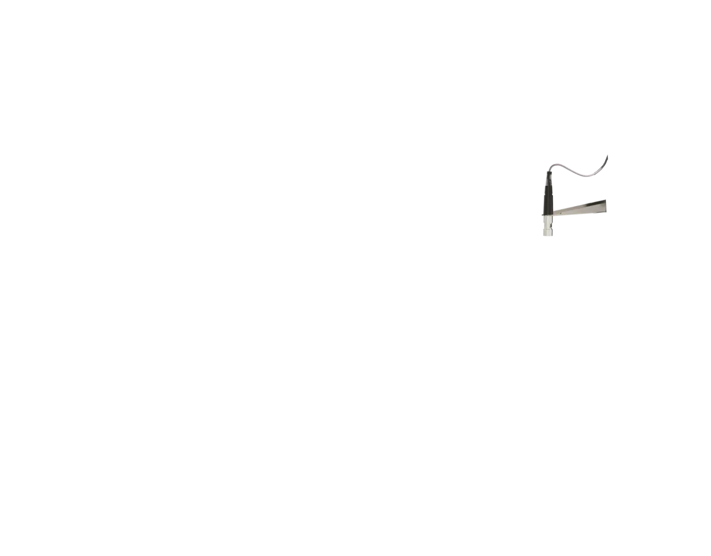
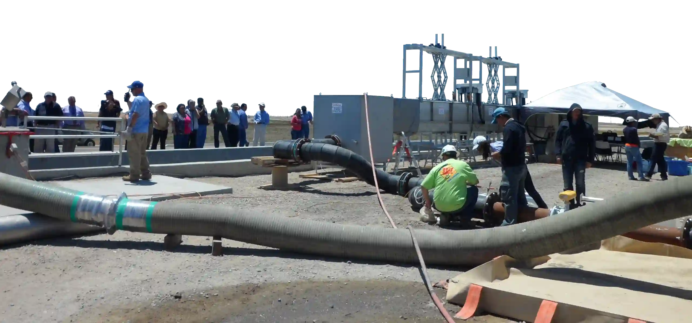

| System General Features | Neotec NOL-HM Series |
|---|---|
| Typical Application | Small to Large Plants |
| Lamp Configuration | Horizontal, Parallel to Flow |
| Module Configuration | 2 to 16 Lamps Per Module |
| Water Level Control (Optional) | ALC(Counterbalanced Level Control Gate) or Motorized Weir Gate or Fixed Weir |
| Module Material | STS304 / STS316 / STS316L |
| Lamp Type | Low Pressure, Amalgam / 320 Watts |
| Cleaning System | Electric Motor-driven Automatic Wiper Mechanism with Limit Switches |
| Monitoring Device | UV Intensity Monitor, Level Sensor |
| Operating Water Temperature | +5°C- +45 |


Personal Information Processing Policy: Neotech UV collects only the minimum necessary information required to process corporate consultations and deliver professional service inquiries.
Data Items Collected: Inquiry Type, Name, Mobile Phone Number, Email Address, and Message Details.
Purpose of Collection: To evaluate and respond to customer inquiries, facilitate engineering consultation, and maintain a historical reference for ongoing client communication.
Retention Period: All submitted information is securely retained for a period of 2 years following receipt, after which it is permanently deleted.
Cookie Policy: Neotech UV does not collect, store, or track cookie data. Our website is designed to be a static information portal. It is a private browsing experience without user tracking or sessions.